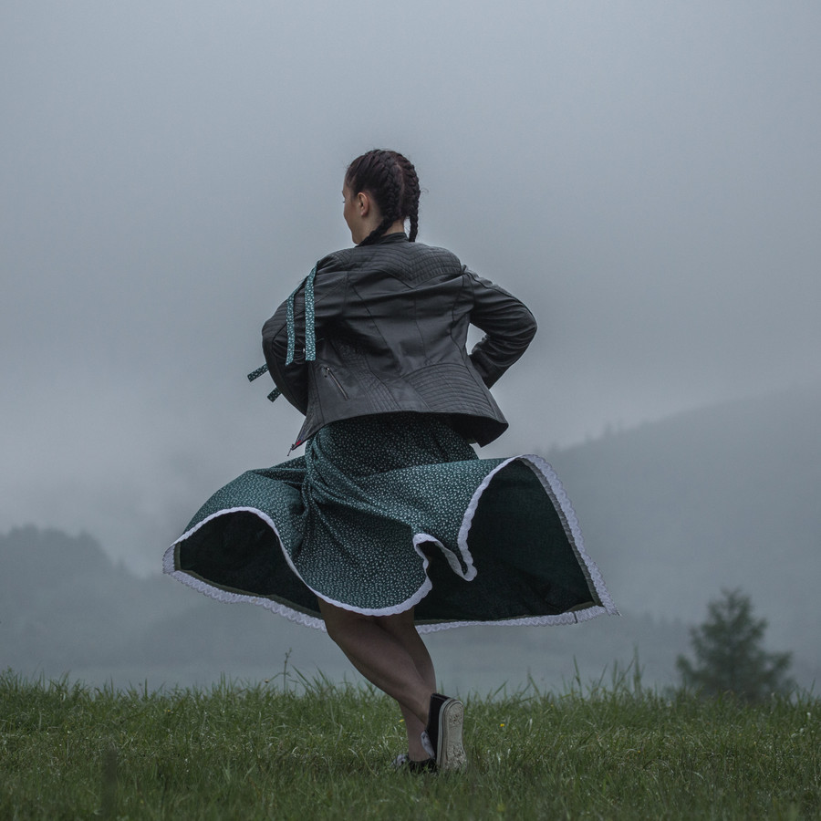
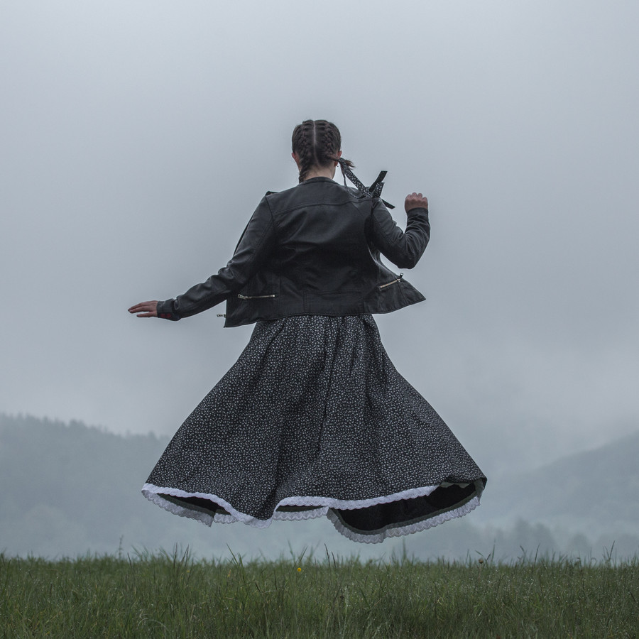
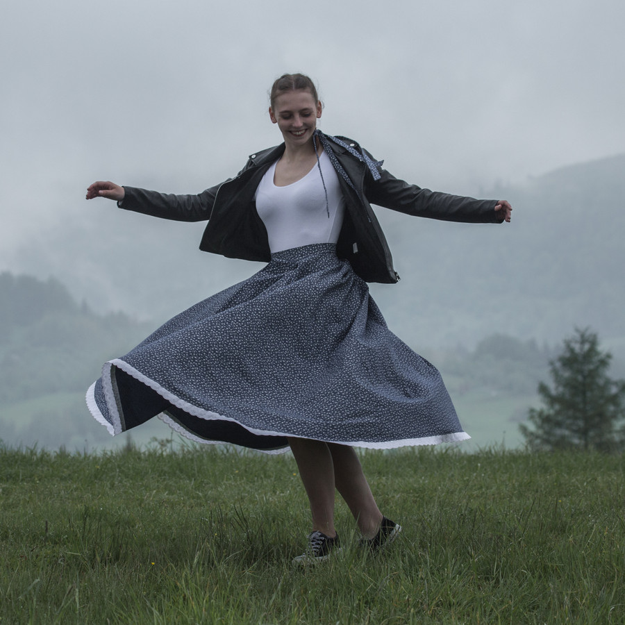
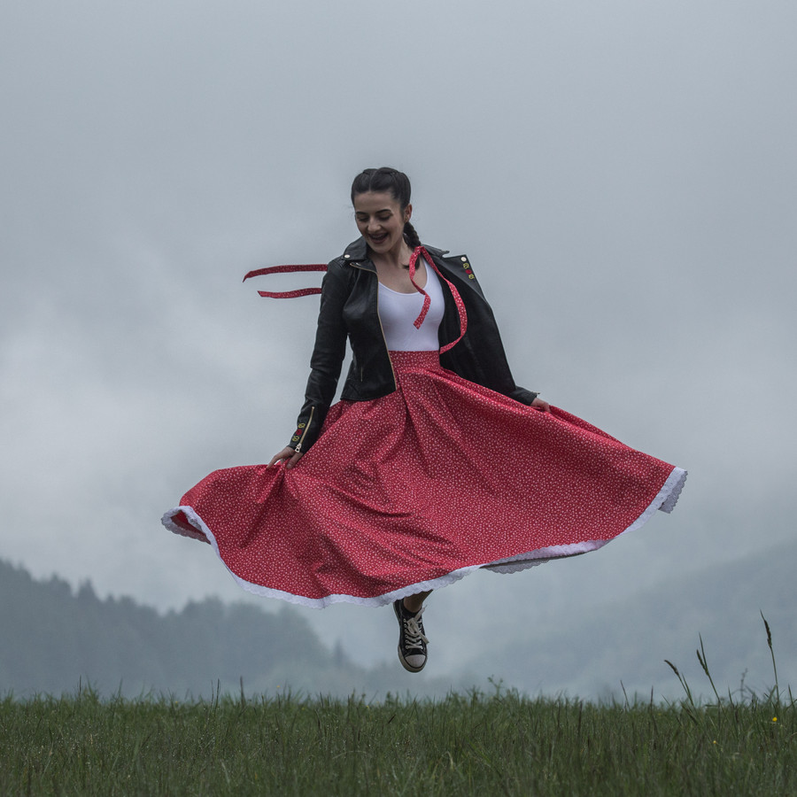
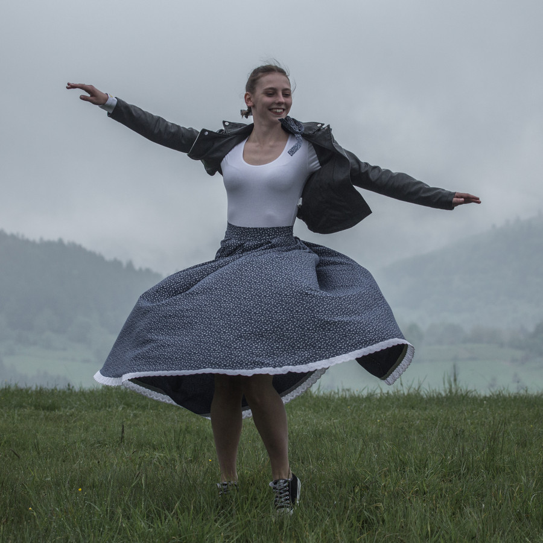
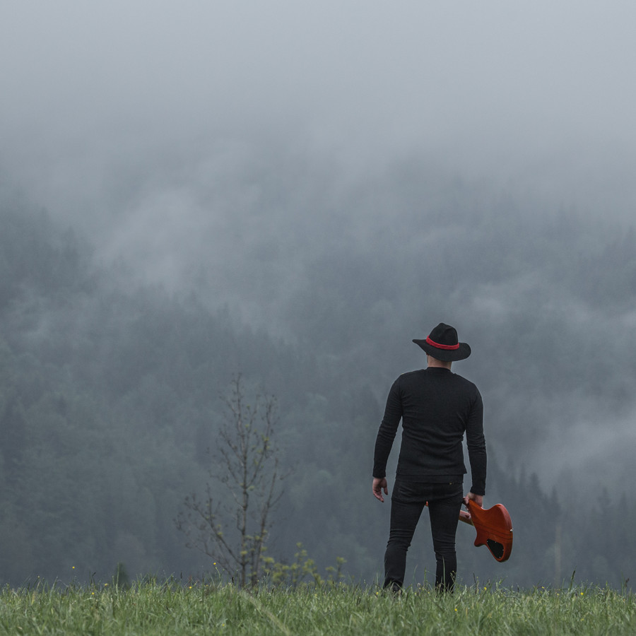
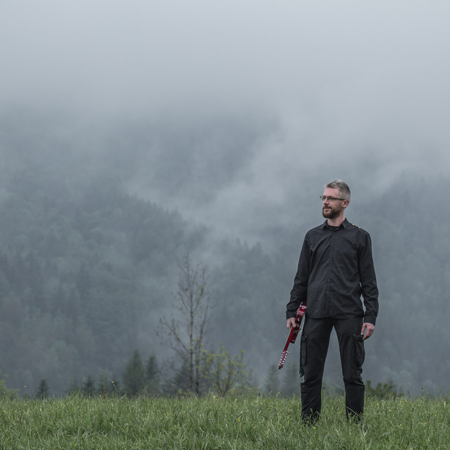
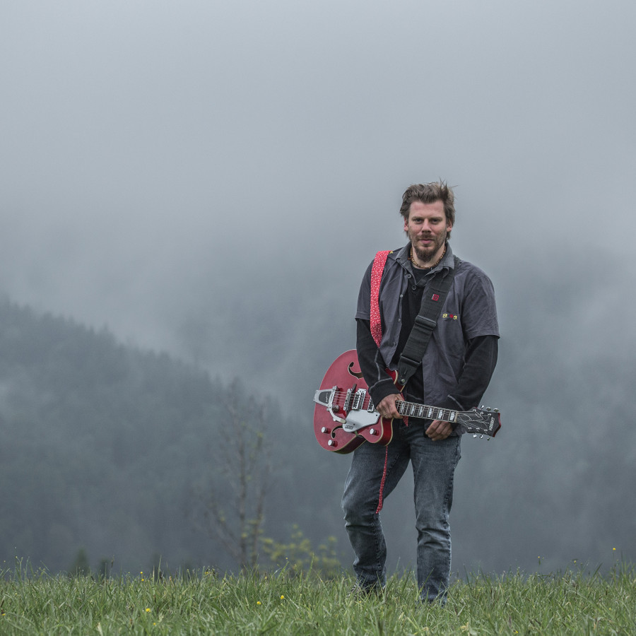
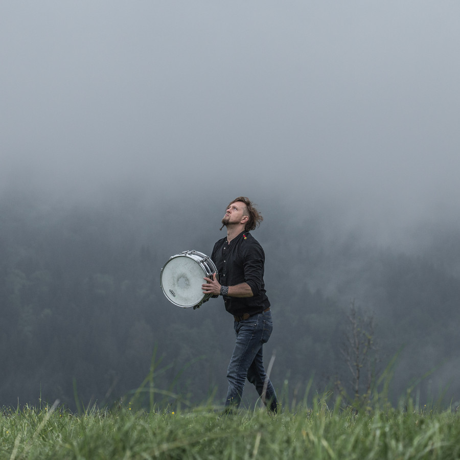

Zespół z Zawoi
Potoczk - rockowo-folkowy głos Beskidów
Zespół Potoczk to unikalne połączenie rocka i folkloru karpackiego, które narodziło się w Zawoi - największej wsi w Polsce. Poznaj ich historię, muzykę i plany na przyszłość.
Kim są Potoczk?
🎸 Początki
Zespół powstał w 2018 roku z połączenia dwóch kapel: Body Mind Relation i Juzyna. Inspiracją było widowisko teatralne "Pamiętnik Babiej Góry", do którego wspólnie tworzyli muzykę. To, co miało być jednorazowym projektem, przerodziło się w trwałą współpracę i przyjaźń.
🎤 Styl muzyczny
Potoczk to rockowo-folkowy produkt regionalny, który łączy tradycyjne melodie karpackie z nowoczesnym brzmieniem. Ich muzyka to podróż po polskich, rumuńskich, węgierskich i słowackich halach i polanach - pełna energii, swobody i naturalności.
🏆 Osiągnięcia
Zespół zdobył nagrodę publiczności na festiwalu "Mikołajki Folkowe" w Lublinie (2021) i doszedł do półfinałów programu "Mam Talent" (2022). Ich debiutancka płyta "Z prądem" ukazała się w 2020 roku, a obecnie pracują nad nowym materiałem.
Dyskografia
📀 "Z prądem" (2020)
Debiutancki album zespołu, na którym znalazły się nowe interpretacje tradycyjnych pieśni regionu babiogórskiego oraz innych regionów Karpat: Słowacji, Węgier, Ukrainy, Łemkowszczyzny i Podhala. Płyta promowana była przez teledysk do utworu "Hej na ty Babi Górze".
Teledysk "Hej na ty Babi Górze" - wizytówka zespołu.
Członkowie zespołu

Julia Pacyga
Wokal

Katarzyna Mętel
Wokal

Magdalena Bania
Wokal

Martyna Giertuga
Wokal

Adam Kukla
Gitara rytmiczna, wokal

Krzysztof „Biały" Mędrala
Perkusja

Krzysztof Kumorek
Gitara elektryczna

Marek Nitoń
Gitara basowa

Mieszko Krzyś
Gitara elektryczna, wokal
Zespół wspierają również: Arek Ziętek (reżyseria, pomysły), Łukasz Kulka (technika), Ania (menedżerka) i wielu innych.
Dlaczego warto ich poznać?
🌍 Promocja regionu
Potoczk nie tylko grają muzykę, ale też promują Beskid Żywiecki i kulturę karpacką daleko poza granicami Polski. Ich nowatorskie podejście do folkloru przyciąga młodych słuchaczy i pokazuje, że tradycja może być żywa i nowoczesna.
🤝 Społeczność
Zespół to nie tylko muzycy - to grupa przyjaciół, którzy wspierają się nawzajem i angażują lokalną społeczność. Współpracują z innymi artystami, technikami i grafikami, tworząc razem coś wyjątkowego.
🎶 Unikalne brzmienie
Potoczk to nie kolejny zespół folkowy - to połączenie rocka, folku i swobodnej improwizacji. Ich muzyka jest pełna energii, pasji i naturalności, co sprawia, że trudno ich pomylić z kimkolwiek innym.
Najbliższe wydarzenia
📅 Koncerty
Aktualnie zespół koncertuje w Polsce i za granicą. Śledź ich profile na Facebooku i Instagramie, aby być na bieżąco z najnowszymi występami.
💿 Nowa płyta
Potoczk pracują nad nowym materiałem. Premiera planowana jest na 2024 rok - zapowiadają kolejne dawki rockowo-folkowych hitów!
Kontakt
Masz pytania, chcesz zaprosić zespół na wydarzenie lub po prostu porozmawiać o muzyce?
Napisz do zespołulub śledź ich na: